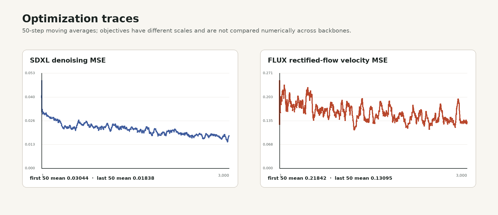
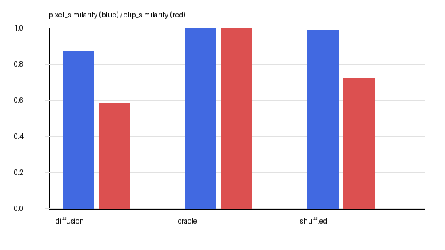

an anime-style character wearing <bottom_1060001> <hat_1000001> <top_1040002>
Textual Inversion Under SDXL and FLUX for Compositional Outfit Generation
Abstract & Findings
We test whether jointly optimized item-token embeddings recover unseen hat–top–bottom combinations. A pinned MapleStory KMS renderer supplies the complete Cartesian product of 10 hats, 10 tops, and 10 bottoms (1,000 distinct outfits). We evaluate embedding-only textual inversion across SDXL 1.0 and FLUX.1-dev, and test whether anime-domain prompt interventions (an anime-style character wearing {tokens}) can repair item-token binding.
Conclusive Finding
Prompt wording alone does not repair failed item binding
The newly sampled outputs are recognizable anime characters rather than icons or blank frames, but they do not reproduce the requested hat, top, and bottom. CLIP similarity changes only marginally from 0.4537 to 0.4642, while foreground IoU drops to 0.0503 and LPIPS rises to 0.5015. Prompt engineering cannot compensate for representational and spatial capacity mismatch.
Experimental Setup
Factorial dataset generation holding avatar pose, skin, hair, face, and canvas constant across all 1,000 combinations:
Rendered Samples
1,000
Item Vocabulary
30 items
Split Strategy
800 / 200
Evaluation Subset
100 rows
Dataset Manifest SHA-256: e2e1842de5a7c94073b171397ea760d1b6c6f57cb01a0970d2798f2483472ae5
Optimization Protocol
Embedding-only optimization with frozen transformer and diffusion backbones:
| Optimization Property | SDXL Textual Inversion | FLUX Textual Inversion |
|---|---|---|
| Base Model Revision | SDXL 1.0 (4621659) |
FLUX.1-dev (3de623f) |
| Text Encoders | CLIP-L + CLIP-G | CLIP-L + T5-XXL |
| Effective Trainable Parameters | 61,440 | 145,920 |
| Loss Objective | Denoising MSE | Rectified-flow Velocity MSE |
| Optimizer / Learning Rate | AdamW, constant \(5 \times 10^{-4}\) | AdamW, constant \(5 \times 10^{-4}\) |
| Steps / Batch / Precision | 3,000 / 4 / BF16 | 3,000 / 4 / BF16 |
| Wall-clock Training Time | 15.18 min | 86.89 min |
| Peak Allocated CUDA Memory | 9.11 GiB | 40.57 GiB |

Figure 1. 50-step moving average loss curves for SDXL denoising MSE and FLUX rectified-flow velocity error.
Evaluation & Metric Benchmarks
Quantitative results comparing the prompt ablation against oracle and shuffled baselines:
| Condition / Source | Pixel Sim ↑ | Foreground IoU ↑ | CLIP Sim ↑ | LPIPS ↓ |
|---|---|---|---|---|
| Oracle Ground Truth | 1.0000 | 1.0000 | 1.0000 | 0.0000 |
| Shuffled Control | 0.9903 | 0.7559 | 0.7257 | 0.0472 |
| SDXL Textual Inversion | 0.8761 | 0.1793 | 0.5809 | 0.3641 |
| FLUX Original Prompt | 0.9122 | 0.0631 | 0.4537 | 0.4332 |
| FLUX Anime-Style Prompt | 0.8952 | 0.0503 | 0.4642 | 0.5015 |

Figure 2. Prompt ablation metrics comparing oracle, shuffled control, SDXL TI, FLUX TI, and FLUX anime prompt.
Held-Out Sample Inspections
Held-out targets compared side-by-side with anime-style FLUX generations:
an anime-style character wearing <bottom_1060007> <hat_1000000> <top_1040001>
an anime-style character wearing <bottom_1060001> <hat_1000005> <top_1040008>
an anime-style character wearing <bottom_1060008> <hat_1000009> <top_1040000>
Discussion & Next Steps
The prompt intervention demonstrates that text conditioning can steer the aesthetic output domain toward stylized anime rendering. However, because token embeddings failed to capture fine-grained pixel item semantics during training, the resulting character outfits are generic substitutes rather than the specified items.
- Foreground Scaling: Sprites must be cropped and enlarged to at least 75% canvas occupancy prior to optimization.
- Pre-training Domain LoRA: The base transformer must acquire the 2D pixel-art domain with rank-16 LoRA before attempting identity token binding.
- Localized Item Masks: Three-item joint captions should be supplemented with category-isolated pairs and segmentation masks.
BibTeX
@article{han2026textualinversion,
title = {Textual Inversion Under SDXL and FLUX for Compositional Outfit Generation},
author = {Han, Hyunsoo},
journal = {Maple Applied ML Case Studies},
year = {2026},
url = {https://hyun-s.github.io/Maple_projects_site/character-translation/additional-experiments/}
}